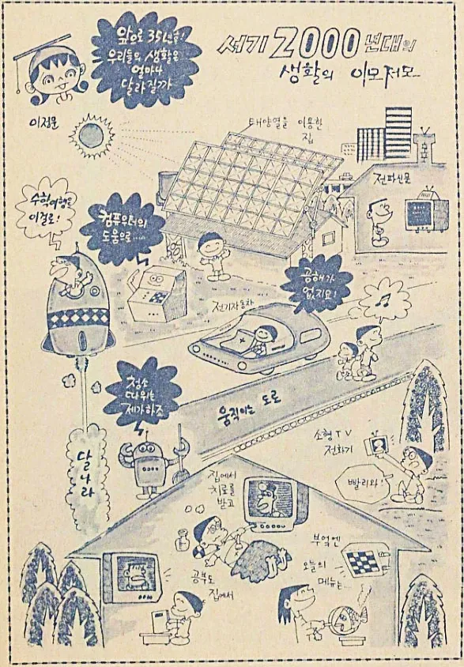
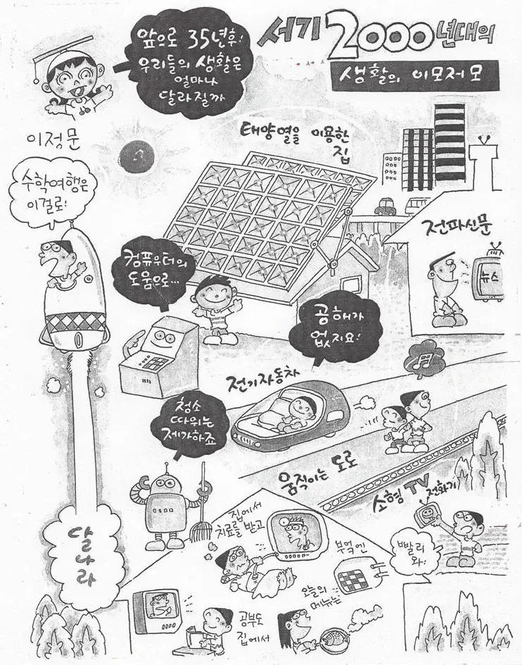
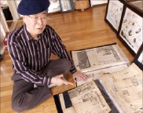
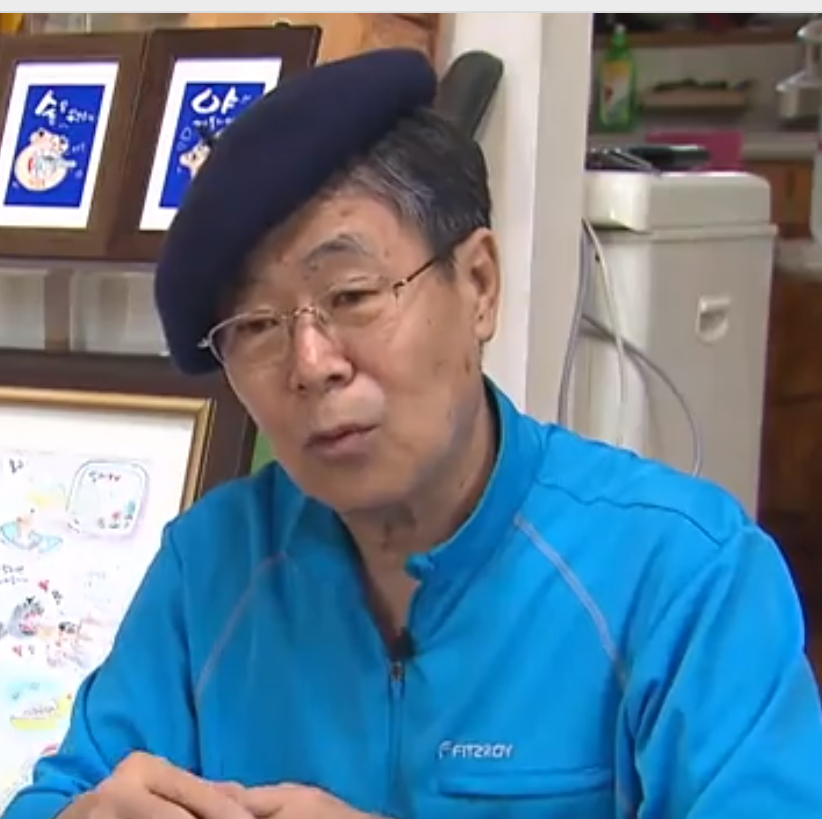

이정문 화백의 예견
한국 SF 만화의 거장이 그려낸 정확한 미래.
그의 상상력은 어떻게 현실이 되었는가?

1941년 출생 일제강점기 말 어느 가난한 집에 태어나, 6.25 전쟁으로 서울이 잿더미가 된 시절을 겪음.
생존과 배움 생계를 위해 구두닦이를 하면서도 밤마다 야간학교를 다님. 집요한 배움의 의지로 1959년 경희대 입학.
만화 데뷔 그의 진짜 관심사는 숫자가 아닌 미래를 상상하는 것. 1959년 잡지 '아리랑'에 만화를 투고하며 데뷔.

당시 1인당 국민소득 105달러. 라디오조차 귀했던 시절에 그려낸 35년 뒤의 미래상.
| 예언 항목 | 설명 | 상태 |
|---|---|---|
| 태양열 집 | 지붕의 태양 전지판으로 동력 생산 | ✅ 상용화 |
| 소형 TV 전화기 | 스마트폰 및 영상 통화의 완벽한 예견 | ✅ 상용화 |
| 원격 진료 & 교육 | 병원과 학교에 가지 않고 집에서 해결 | ✅ 상용화 |
| 전기 자동차 | 공해 없는 자동차 | ✅ 상용화 |
| 로봇 청소기 | 스스로 바닥을 청소하는 움직이는 로봇 | ✅ 상용화 |
| 달나라 수학여행 | 우주 관광 | ⏳ 진행중 |

SF의 선구자 '설인, 알파칸', 순수 한국형 로봇 '철인, 캉타우', '심술통' 등을 통해 시대를 앞선 세계관과 통찰력을 선보였습니다.
50년 아날로그 DB 냉소 속에서도 50년 넘게 매일 신문을 읽고 스크랩하는 습관을 지켰습니다. 작업실을 가득 메운 수만 장의 스크랩 더미는 미래를 내다본 거대한 아날로그 데이터베이스였습니다.
"세상에 허무맹랑한 상상은 없습니다. 언젠가 작은 통신기기가 나올 거라고 확신했죠. 모든 것은 현실의 집요한 관찰에서 시작됩니다."
미래학의 본질: 현재의 사소한 변화나 단서가 거대한 메가트렌드를 형성한다.
1. 단서 관찰: 무전기를 멘 미군, 태양광 뉴스
2. 결핍 인식: 가난과 불편함의 체감
3. 가설 설정: "이것들이 대중화된다면?"
4. 상상 증폭: 만화적 과장과 융합
5. 시각적 예언: 생활 속 장면으로 구체화
토플러, 커즈와일 등 학자들의 거시적/데이터 기반 접근과 달리, 이정문 화백은 '생활인의 결핍'과 '미시적 욕구'에 기반하여 유사한 수준(약 86%)의 높은 적중률을 달성함.
이정문 화백의 예측 방법론을 서구의 대표 미래학자 3인과 비교 분석
| 구분 | 토플러 / 나이스비트 | 레이 커즈와일 | 이정문 화백 |
|---|---|---|---|
| 예측 방법론 | 거시적 콘텐츠 분석 (신문/문헌) | 수확 가속의 법칙 (데이터 외삽) | 물리적 원리 + 일상적 결핍 인식 |
| 예측 적중률 | 약 86% 내외 | 약 86% 내외 (연도별) | 약 50~90% (매체/기준별 상이) |
| 관찰 단위 | 국가, 경제, 사회 구조 | 컴퓨팅 연산력, 나노 기술 | 가정, 개인의 생활상 (미시적) |
| 핵심 시사점 | 막대한 자원이 투입된 거시적/데이터 예측과 단일 개인의 비체계적 직관(약한 신호 포착)이 장기 예측에서 동등한 수준의 정확도를 보여준다는 점은 사회학적으로 유의미한 연구 가설을 제공함. | ||
2005년 인터넷 커뮤니티 재조명 "이게 1965년 만화라고?"
2014년 한국전력 의뢰로 '2050년의 변화된 세상' 발표 (무선 송전, 웨어러블, 탄소 포집 예측)
2015년 한국공학한림원 창립 20주년 기념행사 초청장 표지로 선정. 학계의 공식적 헌사.
2020년 부천 국제만화축제(BICOF) 포럼에서 그의 혜안이 집중 논의됨.
"50년간 하루도 빠지지 않고 스크랩한 신문이 상상력의 원천입니다."
결국 가장 위대한 예측은 화려한 알고리즘이 아닌,
매일매일 세계를 관찰하고 기록한 집요한 인간의 호기심에서 태어납니다.
원본 문서를 읽거나 관련 자료를 확인하세요.